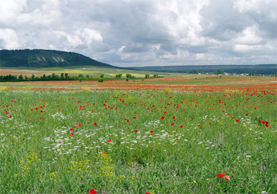
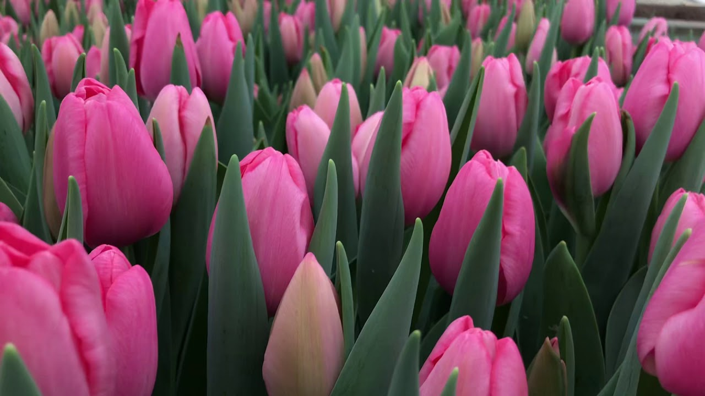
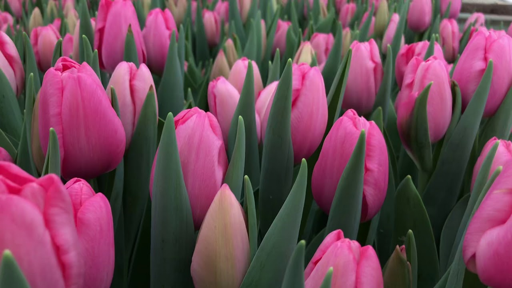

Формування степової рослинності зумовлено гідрокліматичними факторами, рівнинністю території, карбонатністю грунтів. Різнотравно-типчаково-ковилові степи, які переважають на території регіону, мають такий же вік або дещо старші домінуючих грунтів. Вони сформувались у субантлантичну епоху голоцену (Золотун, 1974). Відсутність лісів на вододілах зумовлена успадкованими та сучасними особливостями інших компонентів ландшафтів і ландшафтотвірних факторів (сухість клімату, карбонатність і засоленість грунтів, дефіцит грунтового та атмосферного зволоження). Степова рослинність більш пристосована до дефіциту вологи.
Як відомо, рослинний компонент ландшафтних геосистем виконує функцію синтезу органічної речовини, використовуючи сонячну енергію та мінеральні речовини, які знаходяться в гірських породах. В степах цей компонент має три характерні особливості. По-перше, трав'яний покрив степів низький з домінуванням вузьколистих дерновинних злаків, які здатні витримувати періодичну засуху. По-друге, в степах коренева маса потужна і перевищує надземну зелену в десятки разів. За це відомий фітоценолог Й.К. Пачоський називав степ "лісом - догори ногами". По-третє, степовій органіці притаманна динамічна мінливість: нагромадження або розкладання до мінеральних солей. Це зумовлено хімічною пластичністю м'якої і ніжної трав'яної тканини, клітини якої бідні на дубильні речовини і механічні утворення в порівнянні з деревною або мохово-лишайниковою рослинністю.
 
